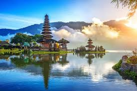
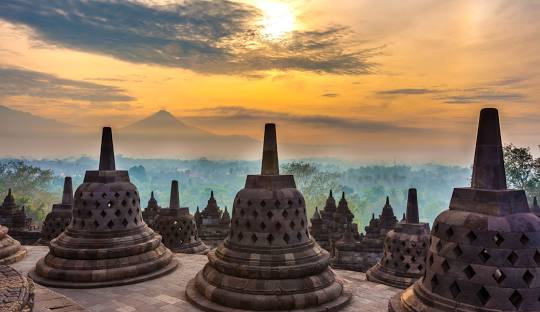
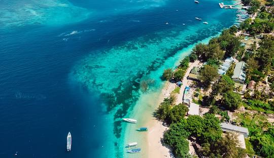
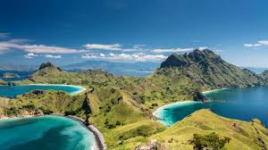
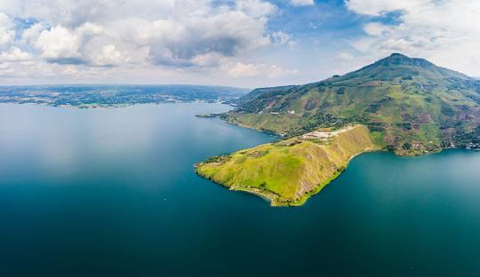
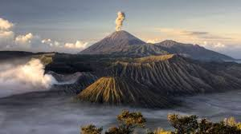
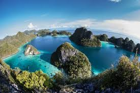
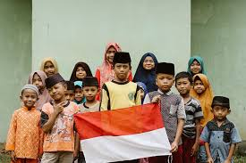

Descripción del País:
Indonesia es un país situado en el sudeste asiático y Oceanía, compuesto por más de 17,000 islas, de las cuales las más grandes son Java, Sumatra, Borneo, Sulawesi y Nueva Guinea. Limita al norte con Malasia y Filipinas, al este con Papúa Nueva Guinea y Timor Oriental, y al sur con Australia, mientras que el océano Índico y el océano Pacífico bañan sus costas. Su capital es Yakarta, ubicada en la isla de Java, la más poblada del archipiélago. Indonesia es conocida por su rica diversidad cultural, étnica y lingüística, con más de 300 grupos étnicos y 700 lenguas habladas. Predominantemente musulmana, es el país con mayor población musulmana del mundo. Su patrimonio incluye templos como Borobudur y Prambanan, junto con paisajes variados que van desde volcanes activos y selvas tropicales hasta playas de arena blanca. Indonesia es una economía emergente, destacada por su producción de petróleo, gas, minerales, y su papel en el comercio global, así como por su industria turística, especialmente en Bali, un destino internacionalmente reconocido.
5 LUGARES PARA IR DE VACACIONES EN U.S.A.
1. Bali
Conocida como la "Isla de los Dioses", Bali es famosa por sus playas paradisíacas, templos hinduistas, arrozales en terrazas y una vibrante cultura local. Es un destino popular tanto para surfistas como para aquellos que buscan relajarse en un entorno tropical.
2. Yogyakarta
Esta ciudad es el centro cultural y artístico de Java, conocida por el imponente templo de Borobudur, el templo hindú de Prambanan, y el Palacio del Sultán. Yogyakarta también ofrece una rica escena de artesanías, batik, y una animada vida nocturna.
3. Islas Gili
Un conjunto de tres pequeñas islas (Gili Trawangan, Gili Meno, y Gili Air) frente a la costa de Lombok, son famosas por sus playas de arena blanca, aguas cristalinas ideales para el buceo y snorkel, y un ambiente relajado sin vehículos motorizados.
4. Komodo
Este parque nacional es hogar del famoso dragón de Komodo, el lagarto más grande del mundo. Además de observar a estos impresionantes reptiles, los visitantes pueden disfrutar de impresionantes paisajes marinos, buceo en arrecifes de coral y playas de arena rosa.
5. Lago Toba
Situado en la isla de Sumatra, el Lago Toba es el lago volcánico más grande del mundo. En el centro del lago se encuentra la isla de Samosir, un lugar ideal para explorar la cultura Batak, disfrutar de las aguas termales y relajarse en un entorno natural impresionante.
DATOS CURIOSOS
1. El país con más volcanes activos:
Indonesia tiene alrededor de 130 volcanes activos, más que cualquier otro país en el mundo. Esto se debe a su ubicación en el Anillo de Fuego del Pacífico, una zona de intensa actividad tectónica y volcánica.
2. El archipiélago más grande del mundo:
Con más de 17,000 islas, Indonesia es el archipiélago más grande del mundo. Solo alrededor de 6,000 de estas islas están habitadas, y Java es la más densamente poblada.
3.La diversidad lingüística:
Indonesia es uno de los países con mayor diversidad lingüística en el mundo, con más de 700 lenguas diferentes. Aunque el idioma oficial es el indonesio, muchas personas hablan varios idiomas, incluyendo lenguas regionales y dialectos.
QUIZ
¡PRUEBA TUS CONOCIMIENTOS DE INDONESIA!
Gracias por participar.
Tu puntaje fue: